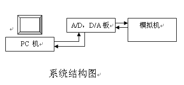

|
概 述 北京航空航天大学自动化科学与电气工程学院自动控制与测试教学实验中心是国家211工程建设项目，其中的自动控制理论教学实验室面向全校开放，承担全校自动控制原理以及线性控制系统基础的本、专科生实验课教学。 本实验说明书所涉及的自动控制原理实验采取半实物仿真技术实现。 实验装置硬件部分包括计算机、打印机、A/D&D/A板和电子模拟机。模拟机用来实现系统模型，A/D&D/A板用来完成数字及模拟量的转换，计算机用来实现各个实验的管理及实验的算法。 软件部分由“自动控制原理实验软件”组成。软件内部分以下几大功能模块。“文件” 模块实现实验数据的存储及打印（含图形）管理。“实验项目” 模块实现各实验内容，可以完成：典型环节实验，计算机辅助分析（波特图法分析，根轨迹法分析），频率特性测试，校正，PID控制器，状态反馈与观测器，采样实验，非线性实验。“信号发生器” 模块可实现常用信号的发生，这些信号是：阶跃，正弦，斜波，方波，三角波，M序列，白噪声。“视图” 模块实现软件系统主窗口的内容调整。“帮助” 模块实现软件系统的帮助提示。  |
||